從一只水桶，開始認識物質
01
水桶是一個物體，桶身、提把支架和握把由什麼製成？
物體和物質：先分清楚正在研究什麼
小葵
這只水桶是整個物體；桶身、提把支架和握把都是同一種材料做的嗎？
爺爺
不一定喔。像這只水桶，桶身是鐵做的，握把卻是塑膠做的。同一個物體，也可以用不同的材料組成。
依序查看水桶的不同部位，找出製作各部位所用的材料。
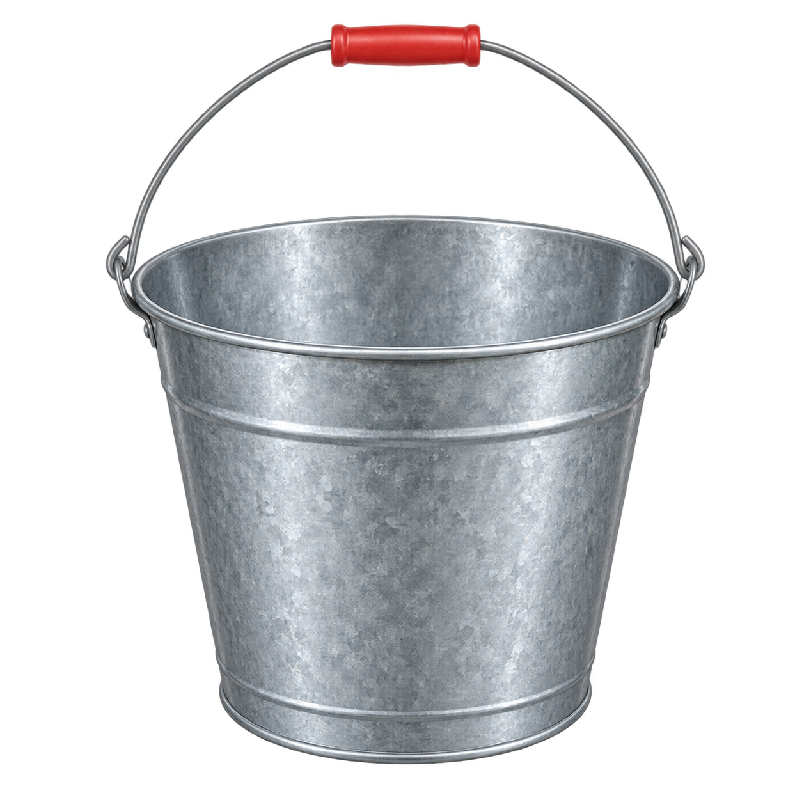
點選桶身、提把支架或握把可放大；再次點擊放大圖可恢復整桶。
物體
整只水桶
水桶是看得見、摸得到的整體，由桶身、提把支架和握把組成。
阿公
水桶是物體；物質是構成物體的成分。物質用來製作物體時，稱為材料。
水桶觀察紀錄
- 桶身材料
- 鐵製材料
- 提把支架材料
- 鐵絲
- 握把材料
- 塑膠材料
- 觀察發現
- 同一物體的不同部位可使用不同材料
02
桶身、水和空氣，各有哪些不同？
物質三態：比較形狀、體積與可壓縮性
小葵
桶身、水和空氣除了外觀看起來不同，還有哪些地方不一樣？
爺爺
先比較它們的形狀、體積和可壓縮性，再用粒子模型想想原因。
↔ 左右滑動，比較三種狀態
| 性質 | 固體金屬塊 | 液體水 | 氣體空氣 |
|---|---|---|---|
| 形狀 | 形狀通常固定 | 隨容器改變形狀 | 充滿容器空間 |
| 體積 | 體積通常固定 3 × 3 × 3＝27 cm³ | 體積大致固定 容器變高，水量不變 | 隨可用空間改變 100–300 mL・每次 50 mL |
| 可壓縮性 | 不易壓縮 ↕ 拖動活塞把手 | 不易壓縮 ↕ 拖動活塞把手 | 較容易壓縮 ↕ 拖動活塞把手 |
爺爺
像形狀、體積和可壓縮性，都是物質的物理性質。觀察這些性質時，物質還是原來的物質喔。
圖解、器材與讀值為教學示意，粒子顏色與速度不代表實測；比較同一份物質，忽略溫度變化。難壓縮不代表完全不能壓縮。
03
以水為例：三種狀態的粒子有什麼不同？
粒子模型：用模型解釋三態
小葵
水結成冰就硬硬的，融化後卻會流，怎麼會差這麼多？
爺爺
結成冰時，水分子會在固定位置附近振動；融化成水後，就能互相換位置，所以水才會流動。
圖中每個圓點代表一個水分子。比較同一批水分子在固態、液態和氣態中的排列、間距和運動；狀態改變時，水分子仍是同一批。
液態水分子
氣態：水蒸氣
固態
分子靠近、排列較整齊，在原位附近振動。
液態
分子集中在容器底部的有限範圍，持續碰撞、流動和換位，不會散布到整個容器。
氣態
分子在整個空間中沿直線移動，碰撞其他分子或杯壁後改變方向。
04
冰、水和水蒸氣，如何互相轉變？
物態變化：沿三角箭頭觀察六種轉變
小葵
粒子的排列和運動會改變，那水可以從一種狀態變成另一種嗎？
爺爺
可以呀！冰塊在室溫下會融化成水，水放進冷凍庫又會結成冰。水也能蒸發成水蒸氣，水蒸氣遇冷則會凝結成水。
點選冰、水或水蒸氣，查看它能轉變成哪些狀態；也可以直接點選六條箭頭，了解轉變過程與粒子變化。
紅色：吸熱藍色：放熱
箭頭表示物態變化方向；點選狀態卡或箭頭／名稱查看詳細說明。
固態・粒子排列與運動
冰｜固態
水分子緊密、有規律地排列，在固定位置附近微微振動，因此冰有固定形狀。
冰中的粒子
固態粒子在固定位置附近微微振動
圓點代表水分子；粒子大小與間距並非實際比例。
點選四角變化：粒子逐漸加入冰晶或離開冰塊；尚未轉變的粒子仍持續運動。
深藍：固態中的水分子藍色：液態中的水分子淺藍：氣態中的水分子
圖中的顏色用來區分水分子所處的狀態，方便觀察轉變過程。狀態改變時，水分子仍然是水分子，並不會像圖中一樣變色。
水蒸氣本身無色、看不見；淡藍流線是教材插畫符號，不是水蒸氣真實的顏色或形狀。
小葵
原來水變成另一種狀態後，還可以再變回原來的狀態！
05
鐵桶生鏽了，外觀有什麼變化？
物質的變化：觀察生鏽前後的性質
沿著時間軸觀察同一個鐵桶，看看桶身表面如何改變。
小葵
阿公，冰融化後還能再結成冰，那鐵桶生鏽後，也能變回原本的鐵嗎？
爺爺
這兩種變化可不一樣。我們先看看鐵桶生鏽前後有哪些差別，再來找原因。
觀察鐵桶生鏽的過程
拖動時間軸，觀察同一個鐵桶在不同時間的變化。
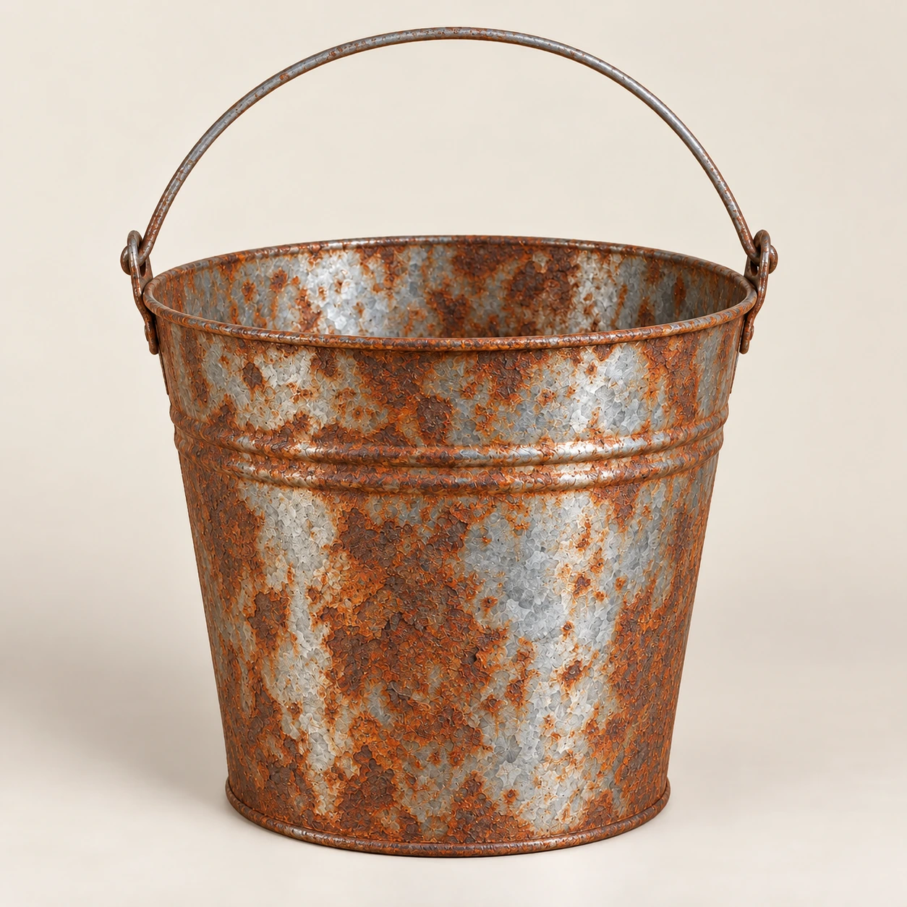
桶身尚未出現鏽層。
ⓘ 這是示意性的時間推移，並非真實時間。
拖動放大鏡觀察桶身
看看鏽層和金屬表面交錯的地方。
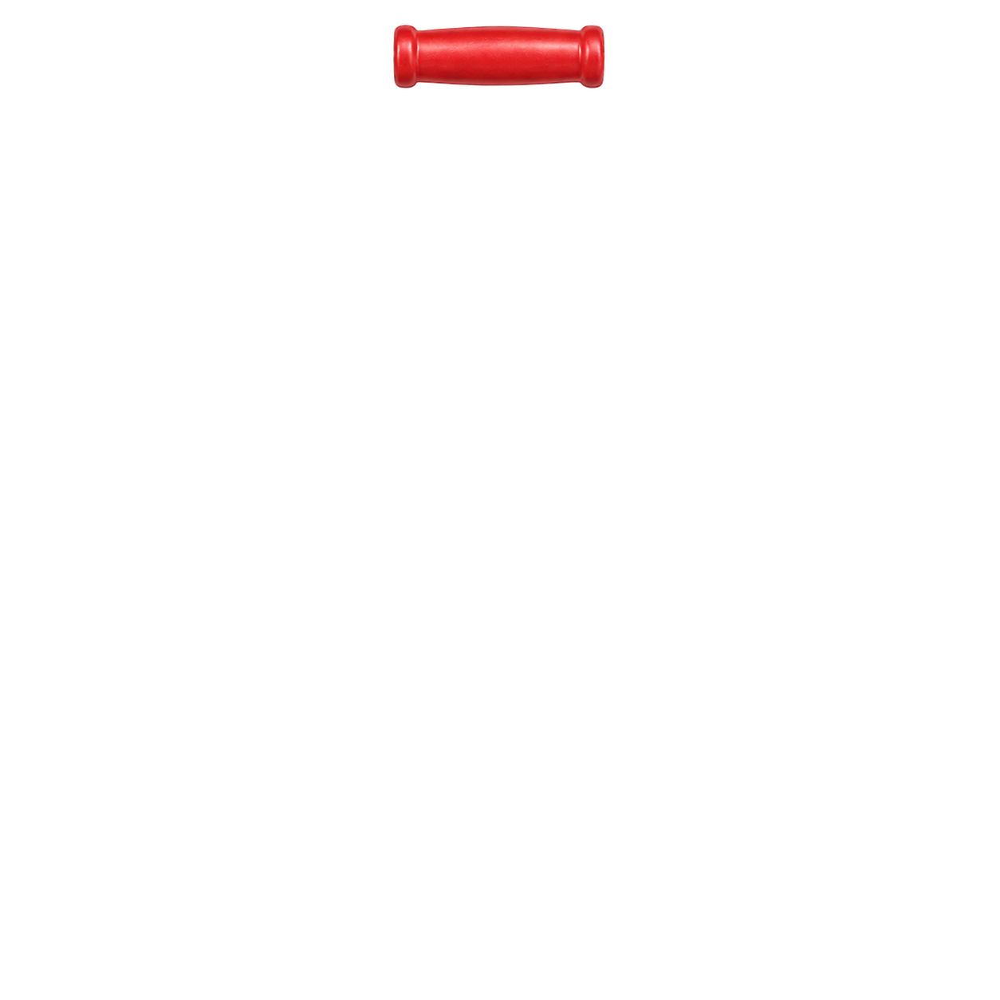
比較生鏽前後的表面
兩個畫面取自同一個桶身的生鏽前後。
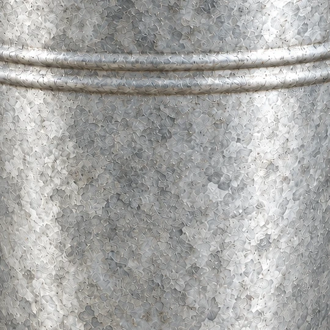
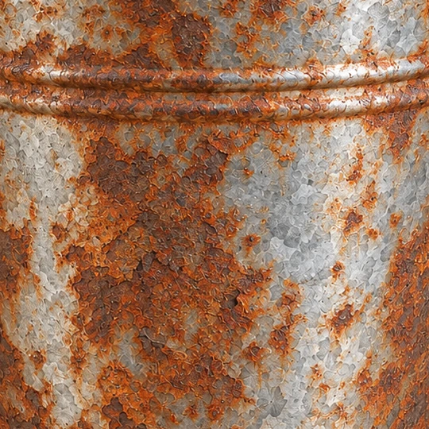
表面改變了，組成也改變了嗎？
鐵鏽和鐵是不是同一種物質，光看顏色和表面還不能確定。
小葵
阿公，桶身原本是灰銀色、亮亮的，現在多了紅褐色的斑塊，表面看起來也比較粗糙了。
06
怎麼分辨物理變化和化學變化？
物理與化學變化：看有沒有生成新物質
小葵
冰、水和水蒸氣看起來不同，鐵桶生鏽也變了樣。它們的變化有什麼關鍵不同？
阿公
先看看變化後有沒有生成新物質，這是判斷的關鍵。
先看定義
物理變化
變化前後仍是同一種物質，沒有生成新物質。
化學變化
變化後生成了不同的新物質，物質組成也改變。
用學過的例子來看
水的三態｜物理變化
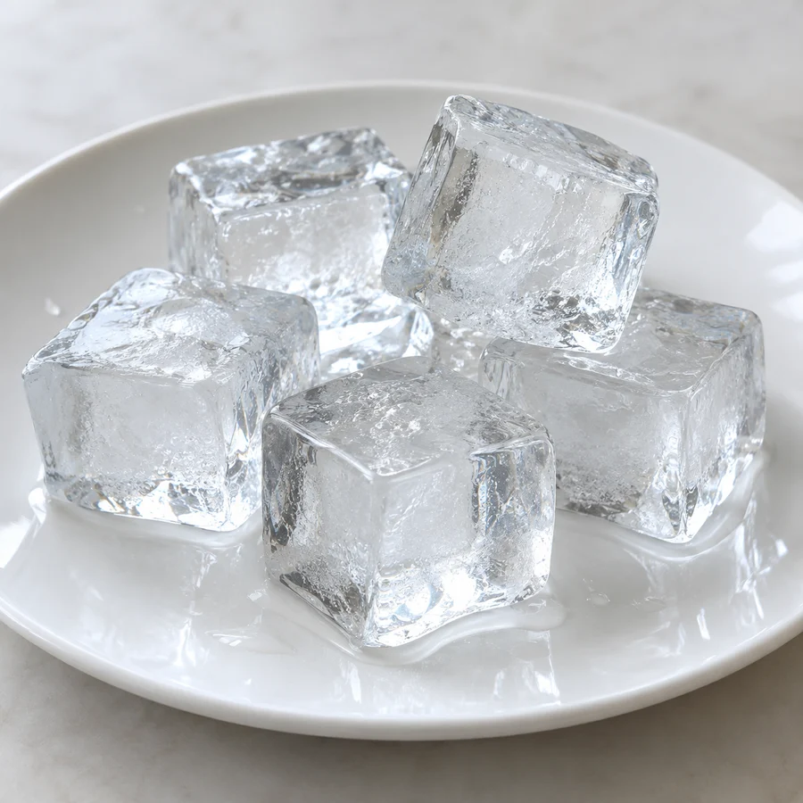
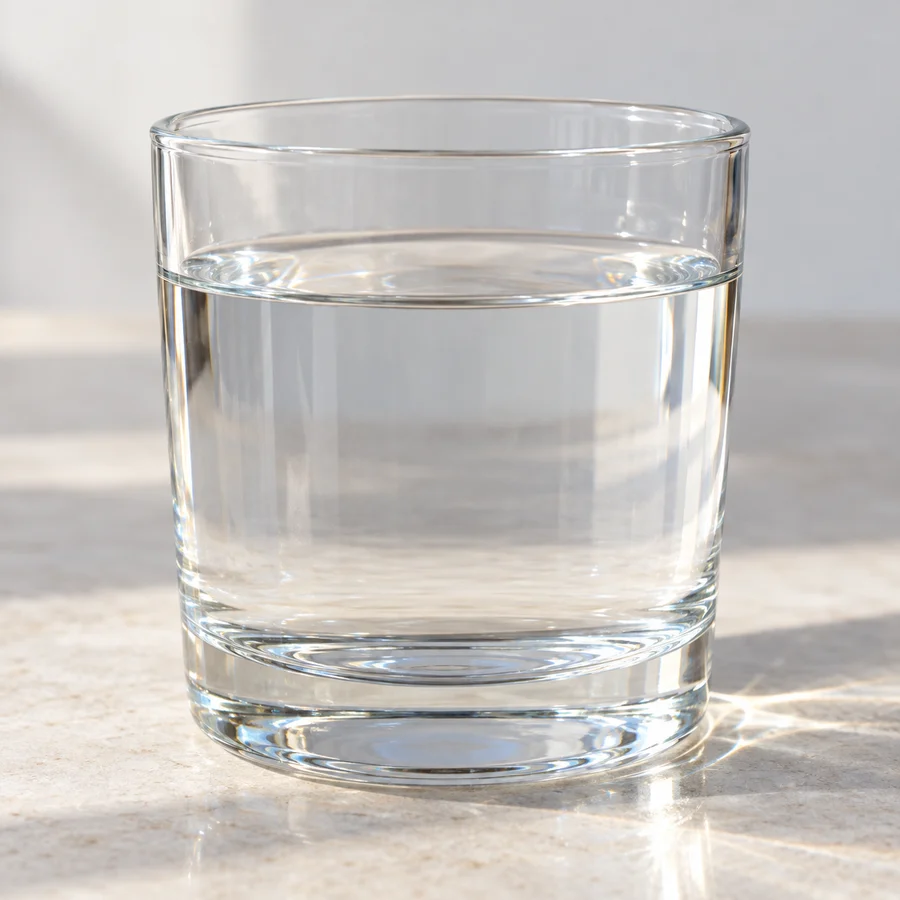
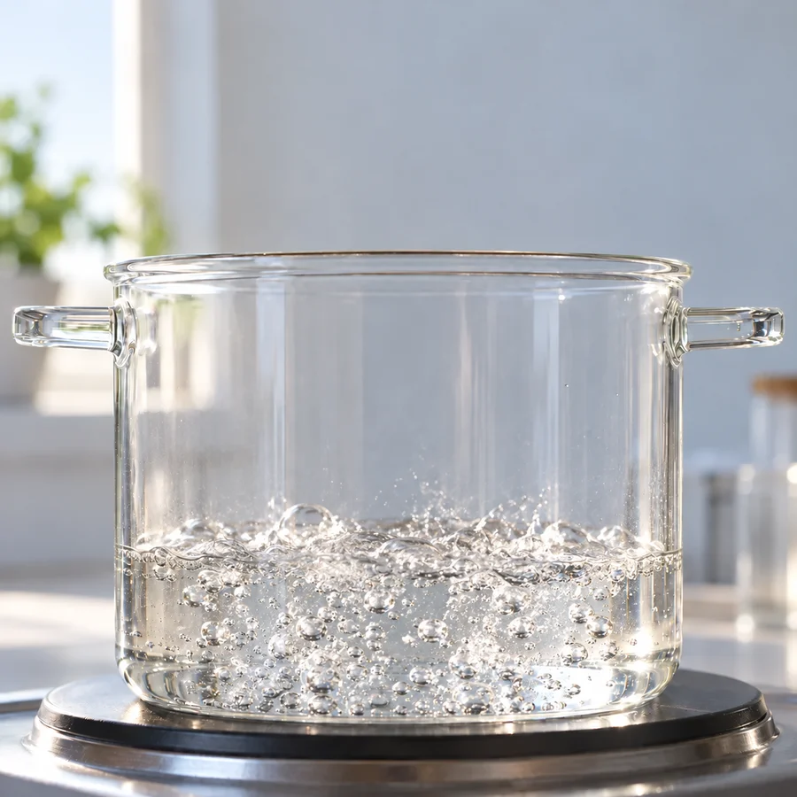
鏡片分別在冰塊內、水面下與水面上方移動，顯示對應的粒子模型（分子本身無法用肉眼看見）。
三態都是 H₂O；冰只微微振動，水會流動，水蒸氣則快速隨機移動。
鐵桶生鏽｜化學變化
鐵在氧氣和水參與下會生鏽，這種反應能力就是鐵的化學性質。
放大鏡中的粒子、顏色與排列皆為示意，不代表原子和分子的真實外觀或比例。
小葵
所以冰融化只是狀態改變，仍然是水；鐵生鏽卻生成了鐵鏽，是另一種物質。
07
判斷純物質和混合物，要看什麼？
純物質與混合物：看成分種類判斷
小葵
阿公，桶裡的水混進了土壤，那裡面就不只一種物質了吧？
阿公
對，像這樣由兩種或兩種以上物質混合而成的，叫混合物；只含一種物質的，叫純物質。
觀察不同樣本的組成
蒸餾水
一種物質純物質
空氣
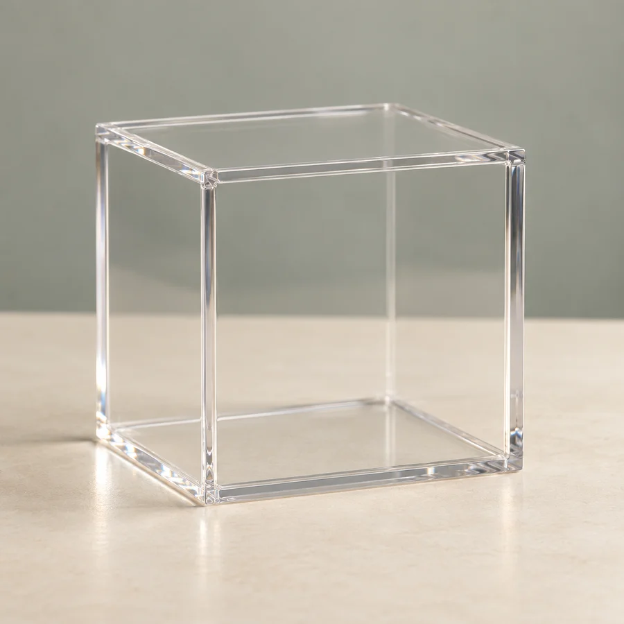
多種氣體混合物
土壤
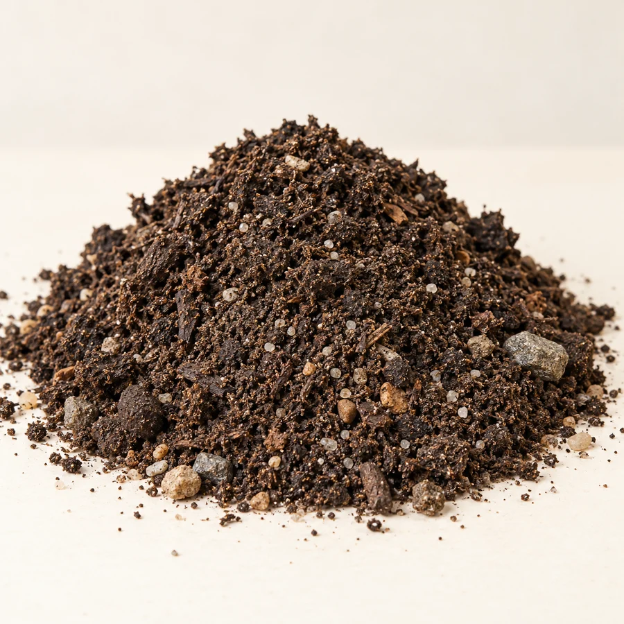
多種成分混合物
小葵
阿公，我可以用手把土壤裡的小石頭挑出來，和其他成分分開。
阿公
對呀！挑出小石頭時，沒有改變物質的種類，所以這是物理方法。這也說明土壤含有不同成分，是混合物。
08
純鐵和蒸餾水，為什麼分類不同？
元素與化合物：純物質的兩種類型
小葵
阿公，土壤裡有不同成分，可以把它們分開。那蒸餾水是純物質，是不是就不能再分解了？
阿公
純物質不能用物理方法分離成不同的物質，但有些能用化學方法分解。像水就能分解成氫和氧；純鐵則不能用化學方法再分解成更簡單的物質。
圖中不同顏色代表不同種類的粒子；顏色是示意，不是物質實際的顏色。
元素 化學方法不能再分解
例子：純鐵
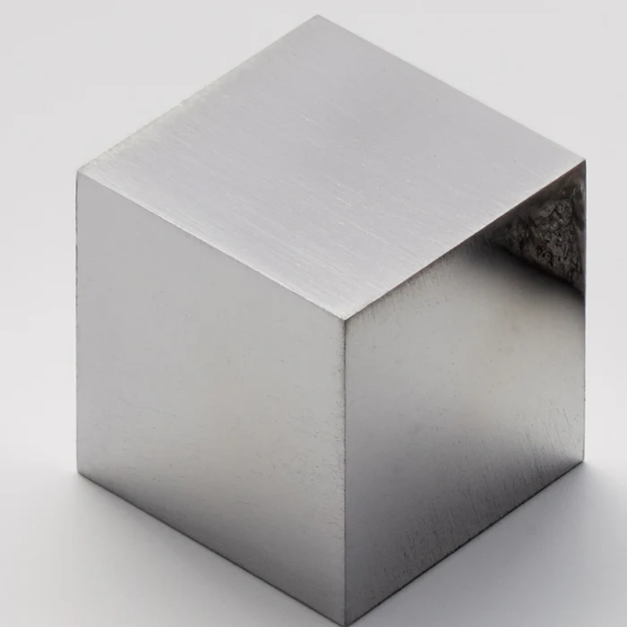
純鐵只含鐵這一種元素。
用化學方法能不能再分解？
不能用化學方法再分解成更簡單的物質。
化合物 不同元素按固定比例結合
例子：蒸餾水
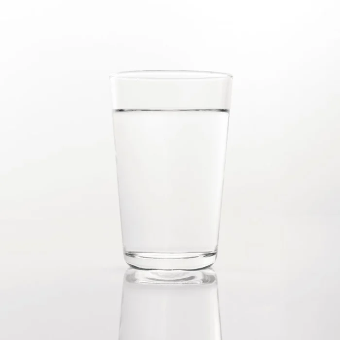
氫
氧
粒子的顏色與大小僅為示意。
每個水分子的組成都相同，所以純水是一種純物質；但水含有氫、氧兩種元素，因此屬於化合物。
用化學方法能不能再分解？
＋
化合物由兩種以上元素按固定比例化學結合而成，可以用化學方法分解。水可分解成氫和氧（示意）。
小葵
所以蒸餾水和純鐵都是純物質，但蒸餾水是化合物，純鐵是元素。
整理：物質的分類
物質
-
純物質
只含一種物質
-
元素
只含一種元素
例子：純鐵
-
化合物
不同元素按固定比例結合
例子：蒸餾水
-
-
混合物
兩種或兩種以上物質混合
例子：空氣、土壤
成分可以是元素、化合物，或兩者都有。
單元小測
翻閱線索，替樣本找到分類
查看桌上的樣本，翻閱手冊找線索，再把樣本放進展示櫃。
小葵
阿公，我想試著用剛剛的方法，把桌上這些樣本分好。
阿公
好，先看看每個樣本的組成，再判斷是元素、化合物，還是混合物。
左右滑動桌面，查看所有樣本和展示櫃。
樣本資料卡
先翻閱手冊，再選擇展示位置。
先選一份樣本，查看它的資料線索。
已分類 0 / 9 份樣本